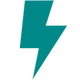
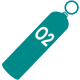
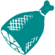
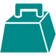
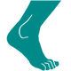

ЗДОРОВЬЕ
Здоровье - показывает текущее значение здоровья персонажа. Если ваше здоровье достигнет нуля, вы погибнете. Когда ваше здоровье будет на уровне 25% или ниже, ваш персонаж станет раненым и будет передвигаться гораздо медленнее. Вам придется восстановить свое здоровье, используя Жареное мясо и расходные материалы, такие как Пакет крови или Медицинский напиток, или путем естественного восстановления, чтобы вернуть телу нормальную функциональность. При атаке на вас, при падении, утоплении и при воздействии экстремальных температур ваше здоровье будет понижаться.
ВЫНОСЛИВОСТЬ
Выносливость - показывает ваш запас энергии. Такие действия, как бег, прыжки, плавание, добыча ресурсов и атака постепенно уменьшают выносливость, а также быстрее понижают ваш уровень пищи и воды.
КИСЛОРОД
Кислород - показывает, как долго игрок может находиться под водой перед тем, как задохнется. Изначально у вас есть 100 единиц запаса кислорода. Каждое вложенное в эту характеристику Очко Опыта повышает кислород на 20 единиц. Вместе с этим скорость плавания повышается на 5%.
ЕДА
Еда - показывает, насколько вы сыты в настоящее время. Постепенно это значение будет снижаться, даже если вы ничего не делаете, но действия, для которых нужна Выносливость, снижают уровень пищи значительно быстрее. Если ваш персонаж замерзает, он становится голодным быстрее. Если ваша пища достигает 0, вы начинаете голодать, из-за этого будет понижаться Здоровье и постепенно увеличиваться Оглушение. Еда может быть восстановлена путем употребления в пищу различных ресурсов, таких как Ягоды, Жареное мясо, Вяленое мясо или Яйца.
ВОДА
Вода - показывает, как долго игрок может обходиться без воды. Ваш уровень воды будет уменьшаться со временем, но действия, для которых нужна Выносливость, снижают уровень воды значительно быстрее. Если вам жарко, вы быстрее захотите пить. Употребление в пищу Стимберри тоже вызывает быстрое снижение уровня воды. Если значение воды достигнет 0, вы станете обезвожены, из-за чего начнет понижаться Здоровье и постепенно увеличиваться Оглушение. Вы можете пополнить ваш уровень воды, выпив воды из водоема (для этого нужно зайти достаточно глубоко или на мелководье нажать "Е"), попав под дождь или использовав такие предметы, как Каменный кран, подключенный к водопроводной системе, или наполненные Бурдюк, Бутылка для воды или Фляга.
ВЕС
Вес - показывает, какой вес может переносить ваш персонаж. Чем больше вещей у вас в инвентаре, тем больше вес. Каждый предмет имеет значение веса, и если общий вес станет слишком большим, вы замедлитесь или даже остановитесь. При загруженности на 85% от максимального веса игрок получает статус Перегружен, из-за чего он не сможет бегать и прыгать, пока не сбросит некоторое количество веса. Скорость бега уменьшается примерно при 80% загруженности. Если же будет достигнут максимум, то персонаж не сможет передвигаться. Можно набрать не более 200% веса от вашего максимального значения. Изначально у вас 100 единиц веса. Каждое Очко Опыта повышает Вес на 10 единиц.
БЛИЖНИЙ УРОН
Ближний урон - показывает, какое количество урона наносит игрок оружием ближнего боя. Изначально у вас 100%. Каждое Очко Опыта увеличивает Ближний урон на 5%. Вы также наносите больше урона инструментами, что позволяет значительно увеличить скорость сбора ресурсов. Рогатка и Лук тратят вашу энергию, но при этом урон, наносимый этим оружием, не увеличивается.
СКОРОСТЬ ПЕРЕДВИЖЕНИЯ
Скорость передвижения - показывает, как быстро может передвигаться ваш персонаж. Изначально у вас 100%. Каждое Очко Опыта повышает Скорость передвижения на 2%. На значение этой характеристики влияет ваш Вес - чем он выше, тем вы медленней. Скорость передвижения влияет и на скорость плавания, хотя Кислород дает бóльшее повышение за уровень.
СТОЙКОСТЬ
Стойкость - это показатель вашей стойкости к погоде и оглушению. Чем выше стойкость, тем больше сопротивление Холоду и жаре, что снижает получаемый от них эффект. Стойкость к оглушению даёт вам больше времени перед тем, как вы упадёте без сознания при употреблении Наркотика, попадании в вас Транквилизирующих стрел, камня из Рогатки или ядовитом укусе Скорпиона и других оглушающих существ.
НАВЫК КРАФТА
Навык крафта - показывает, насколько качественные вещи игрок может создавать . Изначально у вас 100%. Увеличение навыка до 200% увеличивает качество вещей на 33%.
ОГЛУШЕНИЕ
Оглушение - шкала бодрости игрока. При нормальном состоянии (0 единиц) персонаж бодрствует, но если это значение поднимется до максимума, игрок будет полностью обездвижен. Игрок может потерять сознание/очнуться при достижении определенного уровня оглушения. Эта характеристика не может быть улучшена очками опыта, но ее можно повысить за счет Стойкости.